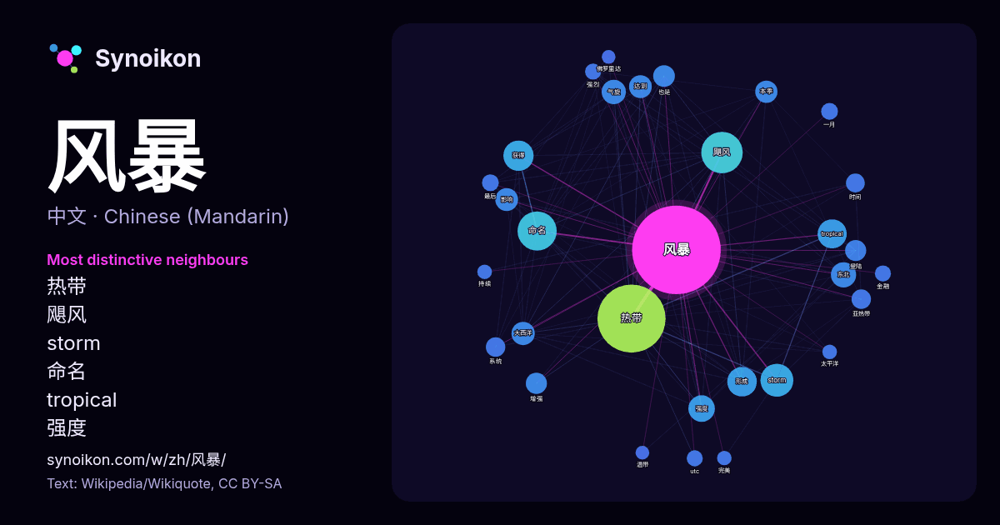

中文 · 每日一词列表
风暴
“storm” · 来自维基百科, Wikiquote 737 次出现中其周围的词。

最具特色的邻近词
- 热带 164×
- 飓风 66×
- storm 46×
- 命名 42×
- tropical 36×
- 强度 28×
- 气旋 24×
- 东北 23×
- 大西洋 22×
- 本季 21×
- 形成 21×
- 获得 20×
- 登陆 19×
- 增强 19×
- 达到 17×
- 亚热带 16×
- 影响 14×
- 一月 13×
- utc 12×
- 强烈 11×
× = 比维基百科普通文本中多出的倍数。
最常见的邻近词
- 热带 197
- 飓风 73
- 命名 65
- storm 46
- 获得 39
- 形成 37
- tropical 36
- 强度 30
- 东北 27
- 气旋 25
- 大西洋 23
- 影响 22
- 达到 22
- 本季 21
- 也是 20
- 增强 19
- 登陆 19
- 亚热带 16
- 系统 16
- 时间 15
上下文
- 五月风暴（法語：Mai 68，直译：「68年5月」）又称五月运动、五月革命、五月事件和红五月，是法国於1968年春夏之交爆发的全國性抗議、罷工和動亂，為時七周，為現代歐洲史上規模最大的社会运动。运动始于极左翼学生因不满资本主义、消费主义、美帝国主义及传统制度而发起的学生运动，该运动迅速升级為大规模罢 Wikipedia snippets · 五月风暴
- 东北风暴（nor'easter）或称东海岸低压，是北大西洋西部的天气尺度温带气旋。这个名字来源于从东北吹来的风向。该术语被用于描述影响美国上北大西洋沿岸和加拿大大西洋省份的风暴。 通常，此类风暴起源于在距离北卡罗来纳州和马萨诸塞州之间的海岸100英里以内的海面上。这种风暴带来的降水模式与其他温带风暴 Wikipedia snippets · 东北风暴
- 一月风暴，又称一月革命、一月夺权，是文化大革命期间于1967年1月15日至2月23日发生在上海的一场政变。由于上海市委对文化大革命出乎意料的抵制，由张春桥等中央文革小组成员同上海反对市委的“造反派”发动了对上海市委的“夺权”，并最终得到了中共中央主席毛泽东的认可和支持。这场政变最终推翻了上海市委，打 Wikipedia snippets · 一月风暴
- 《扫毒风暴》（英语：The Narcotic Operation，又名缉毒风暴、冬去春来）是2025年播映的中国大陆刑侦电视剧，由五百、蔺水净执导，段奕宏、秦昊、于文文、吴幸键、刘欢、侯岩松、吴晓亮主演。该剧由中央电视台、腾讯视频、新丽电视、文信传媒出品，五元文化联合出品。剧情讲述走私商卢少骅因生意 Wikipedia snippets · 扫毒风暴
- 外，在其任內，馬來西亞成功發射人造卫星“MEASAT”，並发展包含國有大企業、製造強國等計劃。1998年，马哈迪因为让马来西亚成为第一个走出亚洲金融风暴的国家，被美国《时代杂志》评选为「1998年亚洲新闻人物」。 退休以後，马哈迪仍然活跃于政治。2006年，他开始批评自己提拔的继任者阿都拉·巴达威， Wikipedia snippets · 马哈迪·莫哈末
- 《风暴》（英語：Firestorm）是一部於2013年上映的香港警匪動作片，由袁锦麟编剧及执导，錢嘉樂任動作設計，刘德华联合投资、監製兼主演，安乐影片、映艺娱乐及银都机构等公司联合出品，江志强和刘德华擔任出品人与监制，其他主演包括林家栋、姚晨、胡军和吕良伟。 電影取景自多個香港島地方，2012年10 Wikipedia snippets · 风暴 (2013年电影)
- 平洋及南中國海地區的较强的热带气旋的一种稱呼；相對應地，发生于大西洋及東北太平洋的热带气旋稱為「颶風」（hurricane），发生于孟加拉湾的称为“风暴”等。热带气旋底层中心附近最大平均风速要达到某个阈值才称作台风（较弱的热带气旋只称热带低压、热带扰动等）。不同氣象机构對该風速值有不同定義，世界氣象組織定为12级（即64節或32 Wikipedia snippets · 颱風
- 六七暴動 第三次中东战争 埃以消耗战争 佐法尔叛乱 南也门战争（英语：Al-Wadiah War） 尼日利亚内战 普韦布洛号危机 鉛弹岁月 六八运动 五月风暴 布拉格之春 1968年波兰政治危机 马来亚共产党叛乱 華約入侵捷克斯洛伐克 正常化 7月17日革命 中苏边界冲突 珍宝岛事件 铁列克提事件 利比亚绿色革命 Wikipedia snippets · 六四事件
更多词
于 2026-10-09 以默认设置预先计算（±5 个词，中等语料）。交互式图可用实时数据刷新。
界面为机器翻译，欢迎指正。